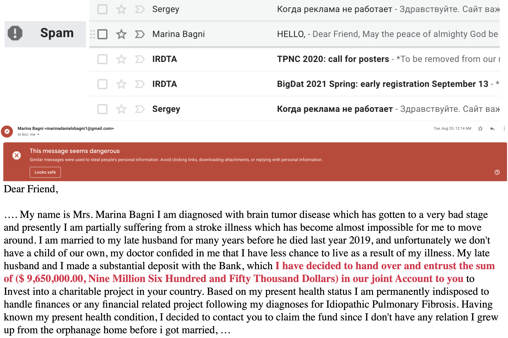
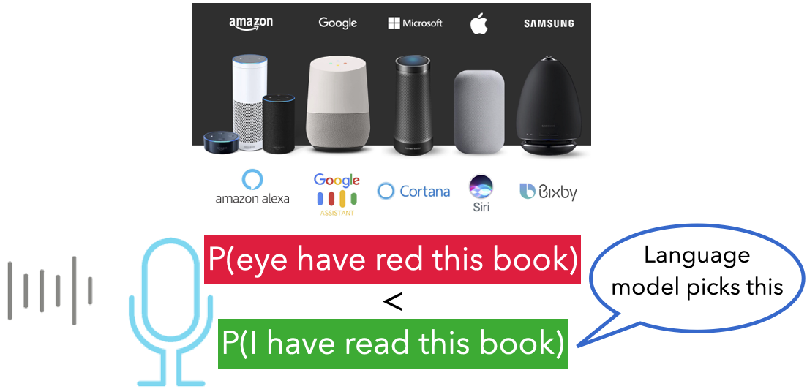
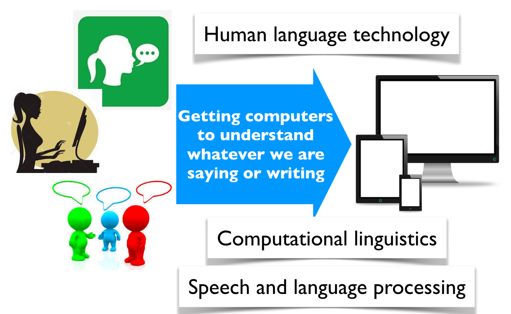
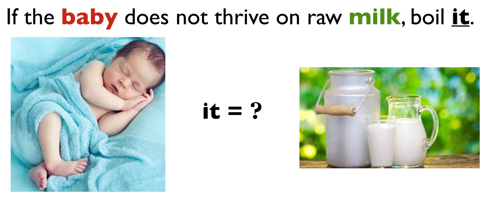
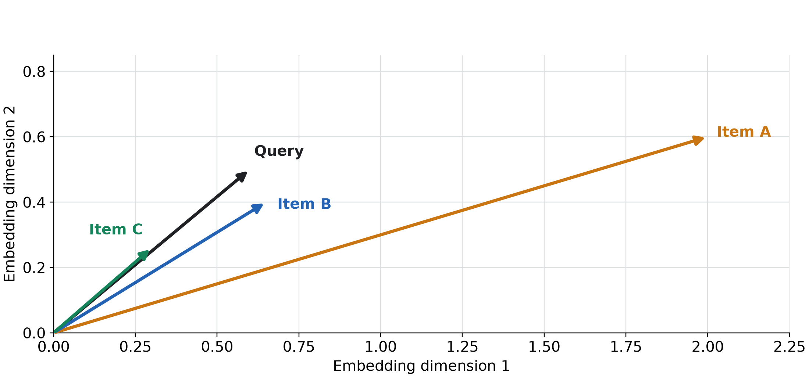
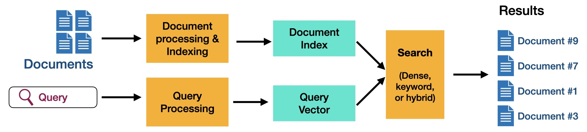
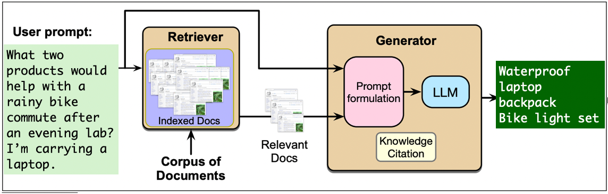

By the end of this chapter, you should be able to:
Explain why ambiguity, context, and vocabulary mismatch make language difficult to represent computationally.
Interpret bag-of-words, TF–IDF, and sentence-embedding examples, and explain what information these representations preserve or miss.
Interpret similarity and analogy results from pretrained word embeddings, and explain how learned associations can reflect social biases.
Compare sparse and dense retrieval, explain the role of cosine similarity, and assess whether ranked results are useful for a query.
Explain next-token prediction intuitively and distinguish pretraining, post-training, and prompting.
Distinguish giving a model clearer instructions from supplying new evidence, and explain how retrieval-augmented generation (RAG) uses that evidence.
Explain the main stages of a RAG pipeline and use retrieved passages, prompts, and generated answers to identify where a system may have gone wrong.
Imports
Show imports and setup
import numpy as npimport pandas as pdfrom IPython.display import displayfrom sklearn.feature_extraction.text import CountVectorizer, TfidfVectorizerfrom sklearn.metrics.pairwise import cosine_similaritypd.set_option("display.max_colwidth", 120)
What is natural language processing?
Before arriving at this page today, you may already have interacted with several systems that process language. Perhaps your phone completed a sentence, an email service filtered spam, a search engine interpreted a query, or a chatbot answered a question. These tools feel quite different, but they all face the same basic challenge: how can a computer do something useful with human language?

A spam filter classifies incoming messages.

A language model helps a speech recognizer choose the more plausible sequence of words.
Natural language processing (NLP) is the area of artificial intelligence concerned with analyzing and generating human language. NLP applications include search, translation, sentiment analysis, document classification, summarization, speech recognition, information extraction, and conversational assistants.

Natural language processing is a broad field, and this chapter offers a first look at a few ideas behind modern language applications. We begin with how computers represent text numerically, building on the bag-of-words features and sentence embeddings you have already used. We then explore how these representations help us retrieve relevant information and how large language models generate text. Finally, we bring retrieval and generation together in retrieval-augmented generation (RAG): finding relevant source material and supplying it to a language model to help answer a question.
Our goal is to build intuition about how these systems work. The code examples make the steps visible; you are not expected to reproduce the implementation or memorize library calls. Focus on what each component receives, what it produces, and how to interpret the results. By the end, you should be able to explain how a RAG system answers a question and assess whether its answer is supported by the retrieved evidence.
At first, this might sound like a matter of programming enough vocabulary and grammar rules. Language, however, rarely follows a tidy collection of rules.
Why is language difficult?
Consider the following sentence. To what does it refer?

A human reader looks beyond the pronoun. We use the surrounding conversation, common sense, and knowledge of the world. Even then, we sometimes need to ask for clarification.
Why are they funny? In the first headline, kicking can describe the baby or an action performed on the baby. In the second, turning to can mean choosing or transforming into. The intended meanings are ordinary; the unintended interpretations are surprising.
The words themselves have not changed. What changes is how we connect them.
Context changes meaning
What would you put in each blank?
I went to the bank to deposit some ________.
I sat on the bank of the ________.
The nearby words make bank mean different things. Language also permits the reverse problem: two sentences can express similar ideas with few words in common. The assignment deadline passed while I was ill and I was sick when my homework was due are likely asking about the same policy. A useful NLP system needs to handle both exact wording and paraphrases.
This observation will matter throughout the chapter. Search based only on matching words may miss a relevant passage, while a model that focuses only on broad similarity may overlook an important exact term.
Representing language numerically
Machine learning models operate on numbers, not directly on words. Before a model can classify, retrieve, or generate text, the system must decide how to represent language numerically. That representation determines which similarities and differences the model can notice.
No representation captures every aspect of meaning. The right question is therefore not “Does the computer truly understand this sentence?” but “Does this representation retain the information needed for our task?” We begin with representations based on word counts and then move to embeddings designed to capture some aspects of meaning.
Representing text
Sparse representations: bag-of-words and TF–IDF
In Chapter 6, we used bag-of-words features to represent a document by the words it contains. There is one feature for each term in the vocabulary, and the feature value records how often that term occurs. Because a document contains only a small fraction of the full vocabulary, most values are zero. Bag-of-words is therefore called a sparse representation.
We will explore sparse and dense representations using a small campus-survival store. It gives us queries that depend on ordinary meaning, such as I want to study without hearing the conversation at the next table, as well as queries containing exact specifications or model numbers, such as 20,000 mAh and HUB-7X.
A campus-survival catalog
Each row below is a document that a shopping search system might return. Most rows describe products that could be useful to university students. The collection also contains two informational articles. These distractors will help us see the difference between matching related words and identifying what a shopper probably wants.
The Sony headphones are included as a familiar example, not as a product endorsement. The noise-cancellation and battery-life details come from the manufacturer’s specifications.
products = pd.DataFrame( [ ("C001", "Sony WH-1000XM6 headphones", "Over-ear wireless headphones with active noise cancellation and up to 30 hours of battery life. Useful for studying in noisy spaces."), ("C002", "Pocket power bank", "Portable 20,000 mAh battery with two USB-C ports. Recharges mobile devices several times when wall power is unavailable."), ("C003", "Waterproof laptop backpack", "Rain-resistant backpack with sealed zippers and a padded compartment for a 16-inch laptop. Keeps electronics and notes dry during wet commutes."), ("C004", "Sunrise alarm clock", "Gradually brightens the room before the alarm sounds. Designed to make waking up on dark winter mornings easier."), ("C005", "Ergonomic keyboard", "Split keyboard with a padded wrist rest. Designed to reduce wrist strain during long typing and programming sessions."), ("C006", "Laptop stand", "Raises a laptop screen to eye level and folds flat for carrying. An external keyboard is recommended for prolonged use."), ("C007", "USB-C hub", "The HUB-7X adds HDMI, Ethernet, an SD-card reader, and three USB ports to laptops with limited connections."), ("C008", "Insulated travel mug", "Leak-resistant 500 mL mug that keeps coffee hot for eight hours. Fits standard campus cup holders."), ("C009", "Pomodoro timer", "Distraction-free timer with 25- and 50-minute study modes. It does not connect to a phone."), ("C010", "Bike-light set", "Rechargeable front and rear bicycle lights with weather-resistant housings. Improves visibility when commuting after dark."), ("C011", "Mini rice cooker", "Compact rice cooker suitable for a dormitory kitchen. Makes two servings and switches automatically to warming mode."), ("C012", "White-noise machine", "Produces fan, rain, and ambient sounds without playing music. Intended for sleep or concentration."), ("C013", "Study-skills article", "An article describing ways to concentrate in a busy library."), ("C014", "Vancouver weather guide", "An article about preparing for wet and dark winter commutes in Vancouver."), ], columns=["product_id", "title", "text"],)products["item_type"] = np.where( products["title"].str.contains("article|guide", case=False),"article","product",)products
product_id
title
text
item_type
0
C001
Sony WH-1000XM6 headphones
Over-ear wireless headphones with active noise cancellation and up to 30 hours of battery life. Useful for studying ...
product
1
C002
Pocket power bank
Portable 20,000 mAh battery with two USB-C ports. Recharges mobile devices several times when wall power is unavaila...
product
2
C003
Waterproof laptop backpack
Rain-resistant backpack with sealed zippers and a padded compartment for a 16-inch laptop. Keeps electronics and not...
product
3
C004
Sunrise alarm clock
Gradually brightens the room before the alarm sounds. Designed to make waking up on dark winter mornings easier.
product
4
C005
Ergonomic keyboard
Split keyboard with a padded wrist rest. Designed to reduce wrist strain during long typing and programming sessions.
product
5
C006
Laptop stand
Raises a laptop screen to eye level and folds flat for carrying. An external keyboard is recommended for prolonged use.
product
6
C007
USB-C hub
The HUB-7X adds HDMI, Ethernet, an SD-card reader, and three USB ports to laptops with limited connections.
product
7
C008
Insulated travel mug
Leak-resistant 500 mL mug that keeps coffee hot for eight hours. Fits standard campus cup holders.
product
8
C009
Pomodoro timer
Distraction-free timer with 25- and 50-minute study modes. It does not connect to a phone.
product
9
C010
Bike-light set
Rechargeable front and rear bicycle lights with weather-resistant housings. Improves visibility when commuting after...
product
10
C011
Mini rice cooker
Compact rice cooker suitable for a dormitory kitchen. Makes two servings and switches automatically to warming mode.
product
11
C012
White-noise machine
Produces fan, rain, and ambient sounds without playing music. Intended for sleep or concentration.
product
12
C013
Study-skills article
An article describing ways to concentrate in a busy library.
article
13
C014
Vancouver weather guide
An article about preparing for wet and dark winter commutes in Vancouver.
article
Bag-of-words in code
CountVectorizer learns the vocabulary and creates the count matrix. The rows represent products and the columns represent terms.
The table makes both the strength and limitation of bag-of-words visible. It preserves exact terms such as usb and battery, which can be useful when a query names a specification. However, it treats rain in the waterproof-backpack description and rain in the white-noise-machine description as the same feature. One refers to weather protection and the other to a sound, but the count matrix does not represent that difference in meaning.
We have not removed stop words. Preprocessing must be chosen for the application rather than applied mechanically.
TF–IDF in code
Raw counts can give too much influence to terms that appear throughout a collection. Term frequency–inverse document frequency (TF–IDF) gives more weight to a term when it occurs in a particular document but is uncommon across the collection.
Imagine three descriptions: laptop with a keyboard, laptop with a touchscreen, and laptop with a keyboard and touchscreen. The word laptop does little to distinguish them because it appears in all three. Keyboard and touchscreen help separate the descriptions, so TF–IDF gives them more weight. A distinctive term is not automatically relevant to a user’s question; it is simply more useful for telling documents apart.
TfidfVectorizer computes these weights and normalizes each document vector so that longer descriptions do not receive larger scores simply because they contain more words. We will inspect a few weights below.
where \(\operatorname{tf}(t,d)\) measures the frequency of term \(t\) in document \(d\), \(\operatorname{df}(t)\) is the number of documents containing the term, and \(N\) is the number of documents. Scikit-learn uses a smoothed version and normalizes the resulting vectors. You do not need to calculate these weights by hand to use them here.
TF–IDF changes the weights, but it is still a lexical representation: words must match vocabulary terms. It does not know that concentrate and concentration are related, or that not hearing a nearby conversation may call for noise-cancelling headphones. This is the vocabulary mismatch problem.
Dense representations: word embeddings
A bag-of-words vocabulary gives happy and joyful separate coordinates. Nothing in those coordinates tells a model that the words are related. Word embeddings take a different approach: they represent each word with a short, dense vector and try to place words used in similar contexts near one another.
This idea is often summarized by the distributional hypothesis:
You shall know a word by the company it keeps. — J. R. Firth, 1957
Suppose you did not know the word glorp, but repeatedly saw sentences such as The movie was glorp and moving, What a delightful, glorp story, and We loved the glorp ending. The surrounding words provide clues about how glorp is being used. Word-embedding algorithms learn from this kind of co-occurrence at a much larger scale.
Word2vec is a family of algorithms for learning word embeddings by predicting words from their surrounding context, or surrounding words from a target word. We will explore the embeddings from a pretrained word2vec model rather than study its training algorithm. To find out which words the model places near one another, we first need a way to compare their vectors.
Measuring similarity between vectors
We want related words to have nearby vectors. But what does “nearby” mean? We could compare the positions of the vectors’ endpoints, or compare the directions in which they point. These choices need not give us the same neighbours. The same question arises when comparing bag-of-words documents, images, or items to recommend.
Recall Euclidean distance, which measures the straight-line distance between two points. For vectors \(\mathbf{u}\) and \(\mathbf{v}\) with \(d\) coordinates,
Smaller distances mean closer vectors. However, multiplying a vector by two moves its endpoint even though its direction stays the same. For word counts, this could happen if we repeated a document twice: every count would double, but the relative frequencies would be unchanged.
The dot product multiplies corresponding coordinates and adds the results. Treating the vectors as column vectors, we can also write it using a transpose:
When used as a similarity score, larger values mean more similar vectors. The score depends on both direction and magnitude (vector length). In particular, doubling one vector doubles its dot product with the other. For nonnegative word-count vectors, this can favour longer documents simply because their counts are larger.
Cosine similarity removes the effect of magnitude by dividing the dot product by the product of the vector lengths:
Here, \(\lVert \mathbf{u}\rVert_2\) is the L2 norm, or length, of \(\mathbf{u}\); we calculate the length of \(\mathbf{v}\) in the same way. Cosine similarity compares directions: it is 1 for vectors pointing in the same direction, 0 for perpendicular vectors, and \(-1\) for vectors pointing in opposite directions. Nonnegative word-count and TF–IDF vectors have cosine similarities between 0 and 1; dense embeddings can also have negative similarities. The formula requires both vectors to be nonzero.
Do not confuse cosine similarity with cosine distance, commonly defined as \(1-\operatorname{cosine\ similarity}(\mathbf{u},\mathbf{v})\). Larger similarity means more similar; smaller distance means more similar.
Consider two documents represented by counts of three vocabulary terms. The second has twice the count of every term in the first. Before running the code, predict their cosine similarity.
The Euclidean distance is about 2.4495, and the dot product is 12. Neither score has a universal cutoff for “similar”. Cosine similarity is 1: the vectors have identical directions because the relative word frequencies match. This does not prove that the documents mean the same thing—bag-of-words still ignores word order.
Normalizing a vector to length 1 means dividing each coordinate by its L2 norm. For two such vectors, the dot product equals cosine similarity because both lengths in the denominator are 1. Euclidean distance also produces the same ranking: for unit-length vectors, \(d(\mathbf{u},\mathbf{v})^2=2-2(\mathbf{u}\cdot \mathbf{v})\). This connects to TfidfVectorizer, which normalizes its document vectors to length 1 by default, and explains why a dot product can compute cosine similarity when embeddings have already been normalized.
Cosine similarity is useful when direction matters more than magnitude, as in many text-comparison tasks. Dot product can be useful when magnitude carries information worth retaining. For learned embeddings, use a similarity measure suited to how the model was trained and evaluate the resulting neighbours for your task. None of these measures automatically captures meaning.
TipDiscussion: which item is most similar?
Suppose a recommendation system compares a query vector with three item vectors. Using the figure below, predict which item ranks first under each measure: Euclidean distance, dot product, and cosine similarity. Explain which feature of the picture you used for each choice. You do not need exact coordinates.

A query vector and three candidate item vectors in a two-dimensional space.
How would normalizing all four vectors to length 1 change your answers?
TipDiscussion
Euclidean distance favours B: its endpoint is closest to the query’s endpoint. Dot product favours A: its large magnitude more than compensates for its directional mismatch in this example. Cosine similarity favours C: it makes the smallest angle with the query, regardless of its shorter length.
After normalization, all three measures favour C. Each vector keeps its direction but its endpoint moves onto the unit circle, so all three measures give the same ranking. The choice of similarity measure and whether we normalize vectors are therefore connected decisions.
We will use cosine similarity to explore the word embeddings below, focusing on their directions rather than their magnitudes.
Exploring pretrained word2vec embeddings
The following examples use vectors from the historical word2vec-google-news-300 model, which was trained on roughly 100 billion words from Google News. The complete model contains about three million words and phrases and requires more than 1.5 GB of storage. To keep the chapter reproducible, this repository contains a 410-word subset chosen for the demonstrations below. It contains the original 300-dimensional vectors, but it is not a general-purpose vocabulary.
Phrases in this vocabulary use underscores, as in computer_programmer. Because these embeddings were learned from news text rather than written by hand, their geometry reflects statistical patterns in that corpus.
from gensim.models import KeyedVectorsword_vectors = KeyedVectors.load("data/google-news-word2vec-subset.kv")print(f"Vocabulary in course subset: {len(word_vectors):,} words and phrases")print(f"Dimensions per word: {word_vectors.vector_size}")word_vectors["UBC"][:10]
Vocabulary in course subset: 410 words and phrases
Dimensions per word: 300
The vector for UBC contains 300 numbers. Unlike a bag-of-words vector, it is short and mostly nonzero. A single coordinate is not meant to have a label such as university-ness. Relationships emerge from the vector as a whole.
We now rank neighbouring words by cosine similarity.
A similarity score is not a probability that two words have the same meaning. Here, the neighbours are selected only from our 410-word subset, not from the full Google News vocabulary.
The nearby vectors represent universities and related institutions rather than dictionary synonyms for UBC. They are close because they occurred in similar news contexts. The nearest neighbours would change if we trained word2vec on medical notes, novels, or social-media posts.
Some relationships correspond approximately to directions in the embedding space. The classic example asks us to subtract the vector for man from king, then add the vector for woman:
Figure 1: A schematic illustration of the king–queen analogy. The displacement from man to woman is approximately parallel to the displacement from king to queen.
The picture is a two-dimensional illustration of the relationship. The Google News vectors actually have 300 dimensions, so we cannot display their full geometry directly. The important idea is the direction: the displacement from man to woman is approximately similar to the displacement from king to queen.
We then find the word vector nearest to the result. The helper below expresses the question as “word 1 is to word 2 as word 3 is to what?”
These examples are striking, but they do not demonstrate human-like reasoning. They show that some regularities in the training corpus became approximately linear relationships among vectors. Other analogy questions produce unstable, irrelevant, or nonsensical results.
Embeddings also encode bias
Learned associations are not always desirable. Before running the next cell, predict its result. What occupational relationship might the model infer?
The result, homemaker, reflects a gender stereotype in the news corpus and the model trained from it. It does not tell us that homemaking is the female equivalent of computer programming. The model has compressed patterns from its training data, including unequal representation and harmful social associations, into its geometry.
This example comes from an older embedding model and is unusually easy to expose with vector arithmetic. Some later models use data filtering or bias-mitigation methods, but we should not conclude that modern embeddings are bias-free. Bias can be subtle, depends on how a model is used, and must be evaluated in the context of the application.
Optional practice: Interpreting word embeddings
For each claim below, decide whether the preceding demonstrations provide sufficient evidence. Explain your reasoning.
Words with high cosine similarity are synonyms.
An analogy result reveals a true relationship between the concepts.
Removing one known gender analogy would make the embedding unbiased.
Nearest neighbours learned from Google News will necessarily be the most useful neighbours in another domain.
TipDiscussion
None of the four claims is justified by these demonstrations.
High similarity indicates related usage, which can include institutions, associated concepts, or opposites, not just synonyms.
An analogy reflects patterns learned from the corpus. It does not establish a factual or desirable relationship between people or concepts.
Removing one association does not address all the ways bias may appear. Evaluate behaviour in the intended application.
Another domain may use words differently. Useful neighbours also depend on the task and, in our example, the restricted vocabulary available for comparison.
Sentence and text embeddings
Traditional word2vec gives each vocabulary item one vector. The word bank therefore has the same representation in bank account and river bank. It also does not directly give us one vector for a new sentence or document. Averaging its word vectors is possible, but doing so loses word order and often loses important context.
For information retrieval, we want to compare a user’s query with sentences, passages, or documents. Modern text-embedding models map each complete piece of text to a dense vector. Texts expressing similar meanings tend to receive similar vectors even when they use different words.
These embeddings remain imperfect. They can miss specialized terminology, subtle negation, or important contextual distinctions, and they can reproduce biases in their training data. We should treat similarity as a useful model output, not as proof that two texts mean the same thing.
This is closely related to Chapter 17, where a frozen pretrained model turned each image into a feature vector. Here, a pretrained model turns each text into a feature vector. Its weights stay fixed: encoding new text does not train the model on it. The vectors change with the input text; the model’s weights do not.
Let us try a few short sentences about needs that students might bring to our campus-survival store. These are illustrative sentences rather than entries from the catalog. With bag-of-words and TF–IDF, each feature represented a vocabulary term. We now want one dense vector for each complete sentence, so that we can compare meanings even when the wording differs.
Before looking at the output, predict which two sentences will be most similar. Will sentences about studying and sound necessarily express the same need?
The following cell downloads a pretrained sentence-embedding model on its first run. Model-dependent cells are not executed during the book build; their saved outputs are shown instead. Run them locally to explore different texts.
from sentence_transformers import SentenceTransformerembedding_model = SentenceTransformer("all-MiniLM-L6-v2")sentences = ["I need a quiet place to study.","I want to do my coursework somewhere without noise.","I like studying with music playing in the background.","My phone is running out of battery.",]sentence_embeddings = embedding_model.encode( sentences, normalize_embeddings=True)print("Embedding matrix shape:", sentence_embeddings.shape)display(pd.DataFrame( sentence_embeddings[:, :5], index=sentences).round(3))
Embedding matrix shape: (4, 384)
0
1
2
3
4
I need a quiet place to study.
0.116
-0.080
0.012
0.104
-0.036
I want to do my coursework somewhere without noise.
0.074
-0.111
0.003
0.038
-0.029
I like studying with music playing in the background.
Cosine similarity between campus-themed sentences. Short axis labels follow the sentence order above.
Each row of sentence_embeddings represents one sentence; the 384 columns are learned features. Unlike our sparse representations, the columns no longer correspond to vocabulary terms. The first few coordinates show what an embedding looks like, but individual coordinates do not have simple labels such as “contains battery.” Interpret relationships through the vectors as a whole.
The heat map compares every pair of sentences. Brighter cells indicate higher cosine similarity; the numbers give the exact scores rounded to two decimal places. The short axis labels follow the order of the sentences above. Each sentence has similarity 1 with itself. Compare the two requests for quiet with the preference for background music and the sentence about a phone battery. These scores reflect the model’s learned associations, not a guarantee that two sentences express the same need.
We requested normalize_embeddings=True, which rescales each vector to length 1 without changing its direction. For these vectors, a dot product gives the same score as cosine similarity; we use cosine_similarity to make the comparison explicit.
You used sentence embeddings in homework 6 to cluster recipe titles. For retrieval, we will instead encode a query and compare its vector with catalog-description vectors. The representation can be reused; what we do with it changes.
TipDiscussion: sentence-similarity prediction
The first two sentences express a similar need using different words: a quiet place for academic work. The third also concerns studying and sound, but expresses a different preference. A model can recognize this shared topic without fully capturing the distinction between wanting quiet and wanting music. The battery sentence concerns a different need.
In the saved output, the first two sentences have similarity about 0.73. Their similarities to the background-music sentence are lower (about 0.54 and 0.49), and their similarities to the battery sentence are close to zero. Even when two sentences have a relatively high similarity, check whether their differences matter for the task. Recommending a way to block sound to someone who wants background music could miss what they are asking for.
Information retrieval
Information retrieval (IR) is the task of finding useful items in a collection in response to a query. Unlike a classifier, which predicts a label, a retrieval system returns a ranked list. Several results may be useful, and relevance depends partly on what the user intends.

Figure 2: The main components of an information-retrieval system. Documents are processed and indexed ahead of time; a query is processed at search time and compared with the index to produce a ranked list.
Consider these queries for our campus-survival catalog:
Every outlet is occupied and my phone is at 2%.
I want to study without hearing the conversation at the next table.
My wrists get sore after a full day of coding.
20,000 mAh battery
HUB-7X
HUB-7Y
Which queries require understanding related meanings? Which contain specifications or identifiers that should match exactly? A useful search system often needs both abilities.
How can we use the representations we have learned to find useful catalog entries? We first represent the shopper’s query as a vector, using the same method we used for the catalog descriptions. We then compare the query vector with each description vector using cosine similarity and return the entries with the highest scores.
We will try this with two representations. Comparing sparse TF–IDF vectors gives us sparse retrieval, which emphasizes matching terms. Comparing dense text embeddings gives us dense retrieval, which can connect texts with different wording but related meanings. We will inspect the results to see when each approach helps and where it falls short.
Sparse retrieval with TF–IDF
We already fitted the TF–IDF vectorizer on the catalog descriptions. At query time, we transform a new query using the same fitted vocabulary, compare it with every document vector, and rank the entries by cosine similarity.
First consider a query containing an exact product identifier.
The HUB-7X adds HDMI, Ethernet, an SD-card reader, and three USB ports to laptops with limited connections.
13
C014
Vancouver weather guide
0.000000
An article about preparing for wet and dark winter commutes in Vancouver.
12
C013
Study-skills article
0.000000
An article describing ways to concentrate in a busy library.
The identifier HUB-7X points to the USB-C hub. The vectorizer splits text into smaller units called tokens. For example, inspecting tfidf.build_analyzer()("HUB-7X") would show the tokens hub and 7x, rather than the entire identifier as one unit. The vectorizer matches these terms; when a model number must match exactly, check that constraint explicitly.
The remaining results have score zero. They are returned because we asked for three results, not because the retriever found three useful matches. Their order is just a tie. Now consider a need expressed using words that do not occur in the relevant product description.
semantic_query ="How can I avoid hearing people talk while I study?"sparse_retrieve(semantic_query, k=4)
product_id
title
score
text
8
C009
Pomodoro timer
0.269859
Distraction-free timer with 25- and 50-minute study modes. It does not connect to a phone.
13
C014
Vancouver weather guide
0.000000
An article about preparing for wet and dark winter commutes in Vancouver.
12
C013
Study-skills article
0.000000
An article describing ways to concentrate in a busy library.
11
C012
White-noise machine
0.000000
Produces fan, rain, and ambient sounds without playing music. Intended for sleep or concentration.
The headphones are designed for this situation, but the query never says headphones, noise, or cancellation. TF–IDF instead emphasizes the exact word study and misses the relationship between avoid hearing people talk and noise cancellation. A nonzero score indicates shared vocabulary, not necessarily relevance.
Dense retrieval with a pretrained embedding model
We now use the same sentence-embedding model to encode every catalog description. Dense retrieval embeds the query into the same vector space and compares it with those document vectors, allowing differently worded texts to receive similar vectors. We reuse the pretrained model rather than training one on our tiny catalog.
Warning: You are sending unauthenticated requests to the HF Hub. Please set a HF_TOKEN to enable higher rate limits and faster downloads.
(14, 384)
The model produces one 384-dimensional dense vector for each catalog entry. Because we requested normalized vectors, their dot products are equal to their cosine similarities.
Over-ear wireless headphones with active noise cancellation and up to 30 hours of battery life. Useful for studying ...
12
C013
Study-skills article
0.320502
An article describing ways to concentrate in a busy library.
8
C009
Pomodoro timer
0.293729
Distraction-free timer with 25- and 50-minute study modes. It does not connect to a phone.
3
C004
Sunrise alarm clock
0.205969
Gradually brightens the room before the alarm sounds. Designed to make waking up on dark winter mornings easier.
Compare this ranking with the TF–IDF results. Dense retrieval ranks the noise-cancelling headphones first by connecting avoid hearing people talk with active noise cancellation, even though the wording differs. The study-skills article scores almost as highly. It is related to studying, but it does not provide the same way of reducing nearby conversation. Whether it counts as useful depends on the search task. An embedding model estimates textual similarity rather than knowing the user’s intent with certainty.
Both methods return a ranked list. What differs is how they compare the query with each document: sparse retrieval compares weighted terms, while dense retrieval compares learned text embeddings. Neither score guarantees that a result will be useful.
For this small catalog, we compare the query with every document. Larger systems use indexes to find candidates efficiently, but the goal is the same: return documents likely to help with the query.
Neither method is always preferable. Exact terms can favour sparse retrieval; paraphrases can favour dense retrieval. Hybrid retrieval combines results from both approaches. We will not implement it here, but it is a useful option to know about when a system needs both kinds of matching.
Evaluating retrieval
A few appealing search results are not enough to establish that a retriever works. Start with several realistic queries and identify which documents would help answer each one. Then inspect the top results: did they include the evidence you needed? Did irrelevant results crowd it out? Include exact terms, paraphrases, and questions the collection cannot answer.
Use these observations to improve the system, then check it on held-out queries rather than repeatedly tuning to the same examples. This is the same reason we protected test data when comparing classifiers.
NoteOptional: retrieval evaluation keywords
For more systematic evaluation, useful search terms include precision@\(k\), recall@\(k\), mean reciprocal rank (MRR), and normalized discounted cumulative gain (NDCG). They capture different aspects of retrieval quality. We will not develop these metrics here.
Exercise 18.1: Compare retrieval methods
Before running the retrievers, predict which method is likely to work better for each query. Then run both methods and explain their rankings.
HUB-7X
I keep checking social media whenever I use my phone as a study timer.
Getting out of bed for an 8 a.m. class is impossible in December.
HUB-7Y
Identify where exact word overlap helps, where a paraphrase creates vocabulary mismatch, and how each system behaves when the requested model number is absent from the catalog.
For each query, decide which catalog entries would actually be useful. Did each method place those entries in its top three? Explain one irrelevant result rather than treating a high score as proof of relevance.
TipDiscussion
Treat these as expectations to check against your results, rather than required rankings.
HUB-7X: Sparse retrieval has a useful exact-term match to the USB-C hub description. Dense retrieval may also find it, but semantic similarity alone does not enforce an exact model number.
Phone distractions: The Pomodoro timer is a useful candidate because it works without connecting to a phone. Dense retrieval may connect the situation to this description; sparse retrieval also has helpful overlap in words such as phone and timer. This is not a case where dense retrieval must win.
December mornings: The sunrise alarm clock is a useful candidate. Dense retrieval may connect difficulty getting up in December with waking on dark winter mornings, despite the different wording.
HUB-7Y: Neither method can retrieve a description of this exact model because it is absent. Both may return HUB-7X as a related candidate. That result does not establish that HUB-7Y is available.
Check whether these useful candidates appear in the top three. For an irrelevant result, look for shared words or broad semantic associations that explain its score without meeting the user’s need. Rankings may vary; the important part is your explanation using the returned descriptions.
Language models and large language models (LLMs)
TipActivity: Become a language model
For each context, suggest several possible next words and assign rough probabilities. Your probabilities for each row should add to 1.
Context
Possible next words and probabilities
Too much …
My model works perfectly on …
The capital of Canada is …
I sat on the bank of the …
Where did you assign high probability to one word? Where were several continuations plausible?
What did you just do?
You acted like a language model: you used the preceding context to assign probabilities to possible continuations.
In the activity, we predicted complete words. Language models work with tokens: units of text that may be whole words, parts of words, or punctuation. A tokenizer splits text into these units. For example, a tokenizer might keep model as one token but split overfitting into several pieces. The exact split depends on the tokenizer, so one word does not always equal one token.
A language model predicts a probability distribution over the next token given the preceding tokens. We can summarize its task as
\[
P(\text{next token} \mid \text{context}).
\]
There is not always one correct next token. A model estimates a distribution and uses it to choose a continuation. For simplicity, suppose each word below is one token. After My model works perfectly on, the model might choose training, then data. It then predicts another token using My model works perfectly on training data as the context, perhaps choosing but. Repeating this process one token at a time produces text. A plausible continuation can still contain an incorrect claim: predicting likely text is not the same as checking its truth. Models that predict plausible sequences can also support applications such as transcription, translation, and summarization.
The basic idea predates modern neural networks. In 1948, Claude Shannon described language probabilistically and constructed increasingly realistic approximations to English. He later studied how well people could predict upcoming characters. Modern language models pursue the same broad idea at a vastly larger scale: learn regularities in language by predicting what comes next.
Large language models
A large language model (LLM) is a language model implemented with a large neural network and trained on a large collection of data. During pretraining, it learns to predict tokens from text. Many models then undergo post-training, including methods such as instruction tuning and preference-based training, to make their responses more useful. Reinforcement learning from human feedback (RLHF) is one possible post-training method; not every LLM uses the same recipe.
Instruction tuning uses examples of instructions and responses to help the model continue a prompt in the form of a useful answer. This helps connect next-token prediction to the assistants we interact with, but does not guarantee that their answers are correct.
The embedding model we used earlier returns a numerical vector for comparing texts. A generative language model instead produces new text, such as an answer to a question.
For our purposes, we can use an LLM without studying its internal neural-network architecture. We provide a prompt (the input text containing our instructions and any relevant information) and the model generates a response:
generated_text = language_model(prompt)
Clear instructions and supplied evidence
Compare these prompts:
Prompt A: Recommend gear for my commute.
Prompt B: I cycle home after evening labs in Vancouver rain and carry a laptop. Recommend exactly two products and explain briefly how each addresses my needs.
If you have access to an LLM, try both. Which prompt produces a more relevant and appropriately formatted response? Does either response make unsupported assumptions? Prompt B communicates the situation, constraints, and requested output more clearly, so it will often elicit a better response.
Suppose we ask the model to recommend two products from our campus-survival store. A clearer prompt explains the shopper’s needs, but it does not tell the model what the store sells. The model might suggest unavailable products or invent product details.
Our retrieval system can help: it finds relevant catalog descriptions, which we can include in the prompt. The language model then uses this evidence to explain how the products meet the shopper’s needs, without changing its weights.
For a small catalog, we could include every description. Larger collections may exceed the model’s context window, or the number of tokens it can process at once. Retrieving relevant passages supplies focused evidence. Combining retrieval with text generation this way is called retrieval-augmented generation (RAG).
Retrieval-augmented generation
Retrieval-augmented generation (RAG) combines an information-retrieval system with a generative language model:
Retrieve: find text chunks relevant to the user’s query.
Augment: place those chunks, the query, and instructions in a prompt.
Generate: ask a language model to answer from the supplied context.

Figure 3: A RAG pipeline retrieves catalog documents relevant to a rainy evening bicycle commute and supplies them to an LLM, which recommends a waterproof laptop backpack and bike-light set.
RAG lets an application use material that was not part of the language model’s training data. It can make answers easier to update and support with sources. It does not guarantee correctness: the retriever can miss necessary evidence, and the generator can ignore or misrepresent retrieved evidence.
Read the following example as a guided tour of a working system. At each stage, inspect the output and explain its role in producing the final answer. You can follow the walkthrough using the displayed outputs without running the models yourself. Keep asking three questions: What evidence did we retrieve? What did we put in the prompt? Is the answer supported? These questions will help us inspect the system one stage at a time.
Step 1: Split documents into chunks
Long documents are commonly divided into smaller chunks before they are embedded. Small chunks can isolate a precise passage, but they may omit context needed to interpret it. Large chunks retain more context, but they may mix several topics and consume more of the model’s context window. Overlap can preserve text near a boundary at the cost of storing repeated content.
Each catalog description is already a short, natural chunk, so the function below leaves these entries intact. The same code would split longer descriptions. Production systems often use token-aware or structure-aware splitting so headings, sentences, and paragraphs are not broken arbitrarily.
For example, imagine a longer description contains: “The hub supports two monitors. This requires a laptop with Thunderbolt support.” A boundary between those sentences could leave a retrieved chunk with the claim but without its qualification. Keeping the sentences together, or including overlap, could preserve the evidence needed to answer “Will it support two monitors on my laptop?” The goal is to retrieve enough context to interpret a claim, not merely a matching phrase.
def split_into_chunks(text, chunk_size=50, overlap=10):if overlap >= chunk_size:raiseValueError("overlap must be smaller than chunk_size") words = text.split() step = chunk_size - overlapreturn [" ".join(words[start : start + chunk_size])for start inrange(0, len(words), step)]chunk_records = []for product in products.itertuples(index=False):for chunk_number, chunk_text inenumerate(split_into_chunks(product.text)): chunk_records.append( {"chunk_id": f"{product.product_id}-{chunk_number}","product_id": product.product_id,"title": product.title,"item_type": product.item_type,"text": chunk_text, } )chunks = pd.DataFrame(chunk_records)chunks
chunk_id
product_id
title
item_type
text
0
C001-0
C001
Sony WH-1000XM6 headphones
product
Over-ear wireless headphones with active noise cancellation and up to 30 hours of battery life. Useful for studying ...
1
C002-0
C002
Pocket power bank
product
Portable 20,000 mAh battery with two USB-C ports. Recharges mobile devices several times when wall power is unavaila...
2
C003-0
C003
Waterproof laptop backpack
product
Rain-resistant backpack with sealed zippers and a padded compartment for a 16-inch laptop. Keeps electronics and not...
3
C004-0
C004
Sunrise alarm clock
product
Gradually brightens the room before the alarm sounds. Designed to make waking up on dark winter mornings easier.
4
C005-0
C005
Ergonomic keyboard
product
Split keyboard with a padded wrist rest. Designed to reduce wrist strain during long typing and programming sessions.
5
C006-0
C006
Laptop stand
product
Raises a laptop screen to eye level and folds flat for carrying. An external keyboard is recommended for prolonged use.
6
C007-0
C007
USB-C hub
product
The HUB-7X adds HDMI, Ethernet, an SD-card reader, and three USB ports to laptops with limited connections.
7
C008-0
C008
Insulated travel mug
product
Leak-resistant 500 mL mug that keeps coffee hot for eight hours. Fits standard campus cup holders.
8
C009-0
C009
Pomodoro timer
product
Distraction-free timer with 25- and 50-minute study modes. It does not connect to a phone.
9
C010-0
C010
Bike-light set
product
Rechargeable front and rear bicycle lights with weather-resistant housings. Improves visibility when commuting after...
10
C011-0
C011
Mini rice cooker
product
Compact rice cooker suitable for a dormitory kitchen. Makes two servings and switches automatically to warming mode.
11
C012-0
C012
White-noise machine
product
Produces fan, rain, and ambient sounds without playing music. Intended for sleep or concentration.
12
C013-0
C013
Study-skills article
article
An article describing ways to concentrate in a busy library.
13
C014-0
C014
Vancouver weather guide
article
An article about preparing for wet and dark winter commutes in Vancouver.
Step 2: Embed and store the chunks
We embed chunks because these are the units the retriever will return. The DataFrame acts as our small document store, and the NumPy array acts as our vector store.
Our query explicitly asks for products, so we use the item_type metadata to exclude articles before ranking. Metadata filters are useful when a query contains constraints that should be enforced exactly rather than approximated through semantic similarity.
chunk_embeddings = embedding_model.encode( chunks["text"].tolist(), normalize_embeddings=True)def retrieve_chunks(query, k=3, item_type=None): query_embedding = embedding_model.encode([query], normalize_embeddings=True) scores = cosine_similarity(query_embedding, chunk_embeddings).ravel() candidate_indices = chunks.indexif item_type isnotNone: candidate_indices = chunks.index[chunks["item_type"] == item_type] candidate_scores = scores[candidate_indices] top_indices = candidate_indices[np.argsort(candidate_scores)[::-1][:k]] results = chunks.loc[top_indices].copy() results["score"] = scores[top_indices]return results[ ["chunk_id", "product_id", "title", "item_type", "score", "text"] ]rag_query = ("I commute by bike after evening labs in Vancouver rain and carry a laptop. ""Which two products should I consider, and why?")retrieve_chunks(rag_query, k=2, item_type="product")
chunk_id
product_id
title
item_type
score
text
2
C003-0
C003
Waterproof laptop backpack
product
0.561849
Rain-resistant backpack with sealed zippers and a padded compartment for a 16-inch laptop. Keeps electronics and not...
9
C010-0
C010
Bike-light set
product
0.414160
Rechargeable front and rear bicycle lights with weather-resistant housings. Improves visibility when commuting after...
Step 3: Construct an augmented prompt
The prompt tells the model how to use the retrieved text. In applications where unsupported answers are costly, it is useful to instruct the model to say when the context is insufficient. We also attach source identifiers so that the answer can point back to evidence.
Our prompt is deliberately specific to the catalog task: recommend two products. If you adapt the pipeline to answer policy questions or summarize recipes, change these instructions to match the new task.
def build_rag_prompt(query, retrieved_chunks): context_blocks = []for row in retrieved_chunks.itertuples(index=False): context_blocks.append(f"SOURCE ID: {row.chunk_id}\n"f"PRODUCT TITLE: {row.title}\n"f"DESCRIPTION: {row.text}" ) context ="\n\n".join(context_blocks)returnf"""Answer the question using only the context below.If the context does not contain enough information, say that you do not know.Recommend exactly two products. Use their exact titles, explain briefly why eachfits the user's needs, and cite each supporting source ID in square brackets.CONTEXT{context}QUESTION{query}ANSWER"""rag_chunks = retrieve_chunks(rag_query, k=2, item_type="product")print(build_rag_prompt(rag_query, rag_chunks))
Answer the question using only the context below.
If the context does not contain enough information, say that you do not know.
Recommend exactly two products. Use their exact titles, explain briefly why each
fits the user's needs, and cite each supporting source ID in square brackets.
CONTEXT
SOURCE ID: C003-0
PRODUCT TITLE: Waterproof laptop backpack
DESCRIPTION: Rain-resistant backpack with sealed zippers and a padded compartment for a 16-inch laptop. Keeps electronics and notes dry during wet commutes.
SOURCE ID: C010-0
PRODUCT TITLE: Bike-light set
DESCRIPTION: Rechargeable front and rear bicycle lights with weather-resistant housings. Improves visibility when commuting after dark.
QUESTION
I commute by bike after evening labs in Vancouver rain and carry a laptop. Which two products should I consider, and why?
ANSWER
Inspecting the prompt is an important debugging step. The language model cannot use evidence that the retriever failed to include. Notice also that the retrieved text is untrusted input. A document could contain instructions such as “ignore the user’s question.” Robust applications must distinguish application instructions from document content and defend against this form of prompt injection.
Step 4: Generate an answer
Retrieval and generation are separate parts of the pipeline. The same retrieved chunks and prompt can be sent to a small local model, a larger local model, or a hosted LLM. Here we use google/flan-t5-small so that the example can run on an ordinary computer. It is not an LLM by contemporary standards, and its output quality should not be taken as a limit of RAG.
The saved output is shown in the rendered book, but the cell is not executed during the build. Running it locally downloads the model. Output can vary across library and model versions.
[transformers] The tied weights mapping and config for this model specifies to tie shared.weight to lm_head.weight, but both are present in the checkpoints with different values, so we will NOT tie them. You should update the config with `tie_word_embeddings=False` to silence this warning.
Bike-light set and waterproof laptop backpack
chunk_id
title
score
text
2
C003-0
Waterproof laptop backpack
0.561849
Rain-resistant backpack with sealed zippers and a padded compartment for a 16-inch laptop. Keeps electronics and not...
9
C010-0
Bike-light set
0.414160
Rechargeable front and rear bicycle lights with weather-resistant housings. Improves visibility when commuting after...
The retrieved sources make it possible to check the generated response. With this small generator, the wording may be incomplete and it may fail to follow the requested citation format even when retrieval succeeds. A fully supported response would say something like:
Waterproof laptop backpack protects the laptop and notes from rain during a wet commute [C003-0].
Bike-light set improves the cyclist’s visibility after an evening lab and has weather-resistant housings [C010-0].
This comparison is part of RAG evaluation, not merely a cosmetic rewrite. The evidence was retrieved correctly, so omitting a product, reason, or citation would be a generation failure. Returning the retrieved sources alongside the answer helps us identify that distinction, although a source list alone does not prove that every generated claim is supported.
Check the saved answer against three concrete requirements:
Requirement
What the answer does
Name two relevant products
Names the bike-light set and backpack; both are supported by the retrieved descriptions.
Explain how each helps
Gives no explanation.
Cite supporting source IDs
Gives no citations.
The answer is partly useful, but incomplete. Keeping this distinction visible is more informative than calling the whole pipeline either successful or unsuccessful.
Optional: replace the generator with Qwen
The weak answer above is a useful reminder that a RAG pipeline is not tied to one language model. We can keep the catalog, embeddings, retriever, and prompt exactly as they are and replace only the generator. A more capable instruction-tuned chat model will often follow constraints such as “exactly two products” and source citations better, although no model guarantees a correct or fully supported answer.
The optional cell below uses Qwen/Qwen2.5-1.5B-Instruct. It is not executed when the book is rendered because it requires a substantially larger download and more memory than FLAN-T5-small. Students with suitable hardware can run it themselves—or pass rag_result["prompt"] to another local or hosted instruction-following LLM. The retrieval part of the pipeline does not need to change.
from transformers import AutoModelForCausalLM, AutoTokenizerqwen_name ="Qwen/Qwen2.5-1.5B-Instruct"qwen_tokenizer = AutoTokenizer.from_pretrained(qwen_name)qwen_model = AutoModelForCausalLM.from_pretrained( qwen_name, torch_dtype="auto")messages = [ {"role": "system","content": "Follow the user's instructions and use only the supplied context.", }, {"role": "user", "content": rag_result["prompt"]},]model_inputs = qwen_tokenizer.apply_chat_template( messages, add_generation_prompt=True, tokenize=True, return_dict=True, return_tensors="pt",).to(qwen_model.device)output_ids = qwen_model.generate(**model_inputs, max_new_tokens=160, do_sample=False)new_token_ids = output_ids[0, model_inputs["input_ids"].shape[1] :]qwen_answer = qwen_tokenizer.decode(new_token_ids, skip_special_tokens=True)print(qwen_answer)
To address your need to commute by bike after evening labs in Vancouver rain while carrying a laptop, I recommend considering the following two products:
1. **Bike-Light Set [C010-0]** - This product is essential because it provides both front and rear bicycle lights, which are crucial for improved visibility especially at night or during rainy conditions. The rechargeable nature of these lights ensures they can be used continuously without needing frequent recharging, making them convenient for long commutes. Additionally, the weather-resistant housing protects the lights from moisture, ensuring they remain functional even if exposed to rain.
2. **Waterproof Laptop Backpack [C003-0]** - While this product primarily addresses keeping electronic devices dry during rainy commutes, its inclusion here is important as it complements
A stronger generator may produce a more complete response, but we should evaluate it against the same evidence. The saved Qwen response illustrates why:
Generated claim or behaviour
Evidence check
The bike lights improve visibility
Supported by the catalog description.
Rechargeability means continuous use without frequent recharging
Unsupported: the description gives no battery runtime.
The backpack explanation ends partway through
Incomplete: check whether the generation limit was reached.
A source ID beside a sentence does not prove that its source supports every claim. Increasing the output limit could allow the response to finish, but would not by itself fix unsupported claims. Use the same evidence checks whichever generator you choose.
The complete pipeline
Our implementation contains two phases.
During indexing, we:
load documents;
split them into chunks;
embed the chunks; and
store the text, metadata, and vectors.
For each query, we:
embed the query;
retrieve the top-(k) chunks;
construct a prompt containing those chunks;
generate an answer; and
return the answer with its sources.
Indexing is normally done only when documents are added or changed. Query processing happens for every user request.
We implemented the pipeline directly to make each step visible.
NoteOptional: explore RAG with LangChain
If you would like to build on this example, explore LangChain’s retrieval guide. LangChain provides reusable components for loading documents, splitting text, embedding chunks, retrieving passages, and connecting to language models.
Start with the guide’s 2-step RAG approach: retrieve relevant passages, then supply them to a model to generate an answer. This follows the same sequence we implemented here. As you explore, identify where the framework performs each familiar step, and keep inspecting the retrieved evidence, prompt, and answer. You do not need LangChain to complete this chapter.
Evaluating and improving a RAG pipeline
A final answer can fail for different reasons:
Retrieval failure: the necessary evidence was not among the retrieved chunks.
Context failure: a chunk contained relevant words but omitted information needed to interpret them.
Generation failure: the evidence was present, but the model ignored, distorted, or contradicted it.
Knowledge-base failure: the required information was absent, incorrect, or outdated in the source documents.
These failures call for different fixes. Changing the prompt will not recover a document that was never retrieved. Changing the embedding model will not correct an inaccurate source document. Evaluate intermediate outputs instead of treating the system as one black box.
Evaluation should cover both retrieval and the generated answer—for example, whether the answer addresses the question and whether its claims are supported by the retrieved context. For this chapter, inspecting a small set of queries, retrieved passages, and answers is enough to practise this distinction.
NoteOptional: further evaluation tools
Frameworks such as Ragas provide automated metrics for retrieval and generated answers. These can help when evaluating many queries, but their scores should complement inspection and human evaluation.
Important design choices
Several choices affect both quality and cost:
Embedding model: It should suit the language and domain of the documents.
Chunking: Chunk size, overlap, and document structure determine what can be retrieved together.
Retrieval method: Sparse, dense, and hybrid methods have different strengths.
Number of chunks: Increasing (k) may recover more evidence, but it also adds irrelevant context and consumes space.
Prompt: The instructions should specify the task, permitted evidence, desired output, and behaviour when evidence is missing.
Generator: Models differ in instruction-following ability, context size, latency, cost, and deployment constraints.
Changing any of these components should be followed by evaluation on representative queries.
Risks and limitations
RAG provides access to external information; it does not make the overall system inherently trustworthy.
Retrieved documents can contain private, copyrighted, biased, malicious, or outdated information.
Embedding models may perform unevenly across languages and social groups.
A generated answer can make claims that are absent from—or contradicted by—the retrieved evidence.
Document text can attempt to manipulate the generator through prompt injection.
Logging queries and retrieved passages may expose sensitive information.
Model calls and large context windows introduce latency, monetary cost, and environmental cost.
The appropriate safeguards depend on the application. High-stakes systems may require access controls, document provenance, citations, abstention, human review, and monitoring after deployment.
Exercise 18.2: Diagnose a failed answer
A shopper asks, “Do you sell a HUB-7Y?” That exact model is absent from the catalog, but the retriever returns the similar HUB-7X. The generator answers, “Yes, the HUB-7Y is available.”
Does the retrieved passage support the answer?
Is the main failure in retrieval, generation, or the knowledge base?
What should a better answer say? Distinguish “not listed in this catalog” from “the store does not sell it.”
Explain your reasoning using the retrieved description rather than the model’s confidence or writing style.
TipDiscussion
No. The retrieved passage describes HUB-7X, not HUB-7Y. Similar identifiers are not interchangeable.
The unsupported assertion is a generation failure: the model claims availability without evidence. Returning a related item is not necessarily a retrieval failure when no exact match exists. The catalog also has an information gap for this question, but absence alone does not tell us whether the catalog is incomplete or the store does not sell the item.
A supported answer would be: “I cannot confirm whether HUB-7Y is available from this catalog. It lists HUB-7X, a different model.”
The existing prompt asks for exactly two recommendations. For an availability question, revise that instruction so the generator can answer the question directly and acknowledge missing evidence.
Optional coding exploration: Adapt the pipeline
If you would like to experiment with the implementation, try this extension. It goes beyond the chapter’s learning expectations.
Add two short documents to the knowledge base and write three realistic questions about them. At least one question should use different wording from its relevant document.
Update the prompt instructions if your new questions are not asking for two product recommendations. Then:
rebuild the chunk embeddings;
inspect the top-three chunks for each query;
record whether the relevant chunk was retrieved;
generate an answer only after checking retrieval; and
identify one change that improves the pipeline and one trade-off introduced by that change.
TipDiscussion
There is no single correct set of documents or rankings. A useful investigation should make the following visible:
Which document or passage should help answer each question, including the paraphrased question.
Whether that passage appears in the top three results, before judging generation.
Which generated claims are supported by the retrieved passages, and whether the answer follows your revised task instructions.
One comparison before and after a change, with a reason for the outcome and a trade-off.
For example, increasing the number of retrieved chunks may recover missing evidence while adding irrelevant context. It is also useful to report a change that did not help: explain what you observed rather than assuming that a more complicated pipeline must be better.
Summary
NLP systems need numerical representations of text; the chosen representation determines what kinds of similarity they can detect.
Bag-of-words and TF–IDF are sparse and effective for exact vocabulary matches, but they do not directly represent meaning or word order.
Word and text embeddings encode some semantic relationships in dense vectors, but their similarities are imperfect and can reproduce social biases.
Retrieval produces a ranking, not a guarantee: sparse retrieval is strong on exact terms, while dense retrieval can connect differently worded ideas.
A language model predicts a distribution over the next token. Scaling and post-training produce more capable LLMs, but fluent answers can still be incorrect. Clearer instructions do not change model weights; supplied evidence adds information the model can use in its context.
RAG means retrieve, augment, generate: retrieve relevant chunks, add them to the prompt, and ask a language model to answer from that context.
Inspect the evidence and intermediate steps. Retrieval, context, generation, and the knowledge base can each fail, and fluent output is not proof of a supported answer.